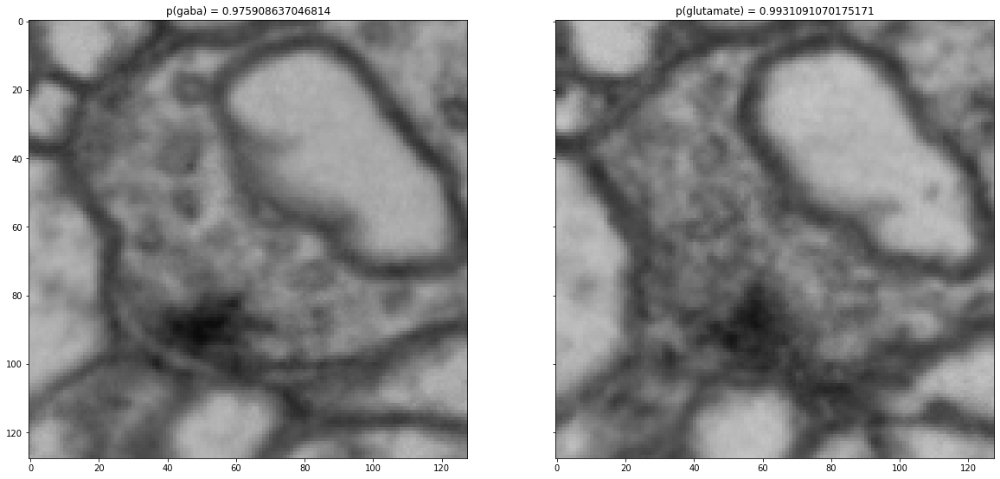
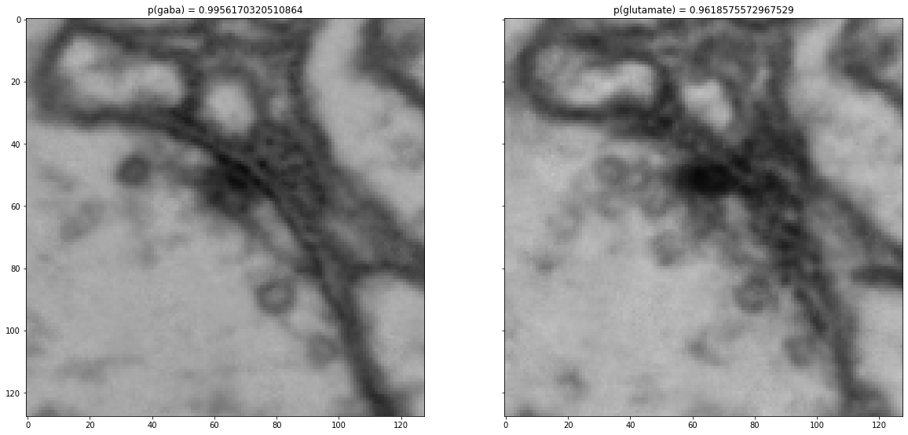
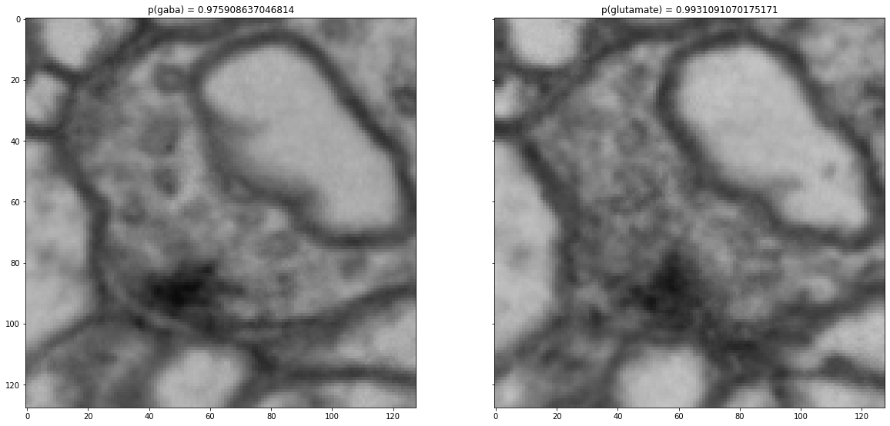
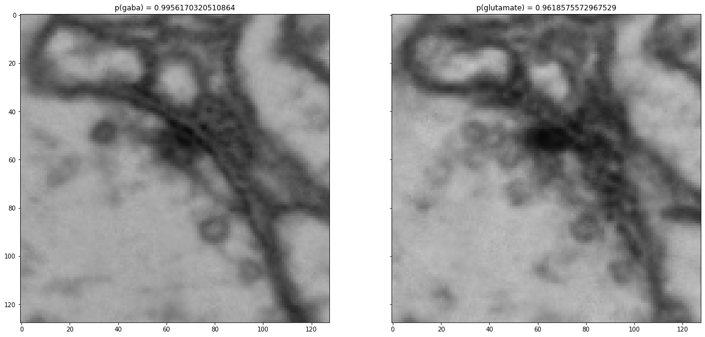
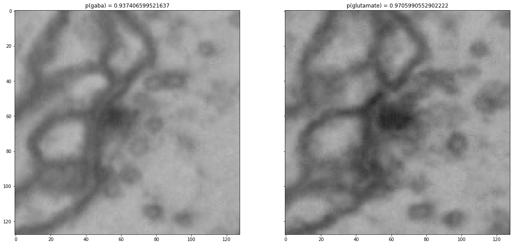
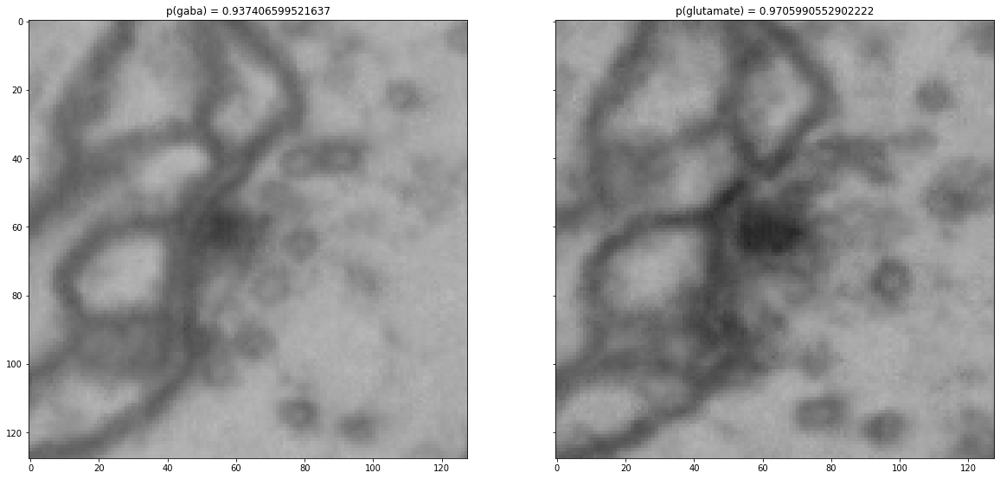

Knowledge Extraction from a Convolutional Neural Network
Contents


Knowledge Extraction from a Convolutional Neural Network¶
By Neuromatch Academy
Content creators: Jan Funke
Production editors: Spiros Chavlis
Objective¶
Train a convolutional neural network to classify images and a CycleGAN to translate between images of different types.
This notebook contains everything to train a VGG network on labelled images and to train a CycleGAN to translate between images.
We will use electron microscopy images of Drosophila synapses for this project. Those images can be classified according to the neurotransmitter type they release.
Setup¶
Install dependencies¶
# @title Install dependencies
!pip install scikit-image --quiet
!pip install pillow --quiet
!pip install scikit-image --quiet
import glob
import json
import torch
import numpy as np
import matplotlib.pyplot as plt
from tqdm import tqdm
from skimage.io import imread
from torchvision.datasets import ImageFolder
from torch.utils.data import DataLoader, random_split
from torch.utils.data.sampler import WeightedRandomSampler
%matplotlib inline
Project Ideas¶
Improve the classifier. This code uses a VGG network for the classification. On the synapse dataset, we will get a validation accuracy of around 80%. Try to see if you can improve the classifier accuracy.
(easy) Data augmentation: The training code for the classifier is quite simple in this example. Enlarge the amount of available training data by adding augmentations (transpose and mirror the images, add noise, change the intensity, etc.).
(easy) Network architecture: The VGG network has a few parameters that one can tune. Try a few to see what difference it makes.
(easy) Inspect the classifier predictions: Take random samples from the test dataset and classify them. Show the images together with their predicted and actual labels.
(medium) Other networks: Try different architectures (e.g., a ResNet) and see if the accuracy can be improved.
(medium) Inspect errors made by the classifier. Which classes are most accurately predicted? Which classes are confused with each other?
Explore the CycleGAN.
(easy) The example code below shows how to translate between GABA and glutamate. Try different combinations, and also in the reverse direction. Can you start to see differences between some pairs of classes? Which are the ones where the differences are the most or the least obvious?
(hard) Watching the CycleGAN train can be a bit boring. Find a way to show (periodically) the current image and its translation to see how the network is improving over time. Hint: The
cycle_ganmodule has aVisualizer, which might be helpful.
Try on your own data!
Have a look at how the synapse images are organized in
data/raw/synapses. Copy the directory structure and use your own images. Depending on your data, you might have to adjust the image size (128x128 for the synapses) and number of channels in the VGG network and CycleGAN code.
Train an Image Classifier¶
In this section, we will implement and train a VGG classifier to classify images of synapses into one of six classes, corresponding to the neurotransmitter type that is released at the synapse: GABA, acethylcholine, glutamate, octopamine, serotonin, and dopamine.
Data Preparation¶
Download the data¶
# @title Download the data
import requests, os
from zipfile import ZipFile
# @markdown Download the resources for this tutorial (one zip file)
fname = 'resources.zip'
url = 'https://www.dropbox.com/sh/ucpjfd3omjieu80/AAAvZynLtzvhyFx7_jwVhUK2a?dl=1'
if not os.path.exists('data/'):
print('Data downlading...')
r = requests.get(url, allow_redirects=True, stream=True)
with open(fname, 'wb') as fh:
fh.write(r.content)
print('Download is cmpleted.')
# @markdown Unzip the file
fname = 'resources.zip'
# specifying the zip file name
fnames = ['data.zip', 'checkpoints.zip']
# opening the zip file in READ mode
with ZipFile(fname, 'r') as zf:
# extracting all the files
print('Extracting all the files now...')
zf.extractall(path='.')
print('Done!')
# @markdown Extract the data
fnames = ['data.zip', 'checkpoints.zip']
for fname in fnames:
# opening the zip file in READ mode
with ZipFile(fname, 'r') as zh:
# extracting all the files
print(f"\nArchive: {fname}")
print(f"\tExtracting data...")
zh.extractall(path='.')
print('Done!')
# @markdown Make sure the order of classes matches the pretrained model
os.rename('data/raw/synapses/gaba', 'data/raw/synapses/0_gaba')
os.rename('data/raw/synapses/acetylcholine', 'data/raw/synapses/1_acetylcholine')
os.rename('data/raw/synapses/glutamate', 'data/raw/synapses/2_glutamate')
os.rename('data/raw/synapses/serotonin', 'data/raw/synapses/3_serotonin')
os.rename('data/raw/synapses/octopamine', 'data/raw/synapses/4_octopamine')
os.rename('data/raw/synapses/dopamine', 'data/raw/synapses/5_dopamine')
else:
print('Data are downloaded.')
# @markdown Remove the archives
for i in ['checkpoints.zip', 'experiments.zip', 'data.zip', 'resources.zip']:
if os.path.exists(i):
os.remove(i)
Data are downloaded.
Classifier Training¶
Create and Inspect Datasets¶
First, we create a torch data loaders for training, validation, and testing. We will use weighted sampling to account for the class imbalance during training.
def load_image(filename):
image = imread(filename)
# images are grescale, we only need one of the RGB channels
image = image[:, :, 0]
# img is uint8 in [0, 255], but we want float32 in [-1, 1]
image = image.astype(np.float32)/255.0
image = (image - 0.5)/0.5
return image
# create a dataset for all images of all classes
full_dataset = ImageFolder(root='data/raw/synapses', loader=load_image)
# randomly split the dataset into train, validation, and test
num_images = len(full_dataset)
# ~70% for training
num_training = int(0.7 * num_images)
# ~15% for validation
num_validation = int(0.15 * num_images)
# ~15% for testing
num_test = num_images - (num_training + num_validation)
# split the data randomly (but with a fixed random seed)
train_dataset, validation_dataset, test_dataset = random_split(
full_dataset,
[num_training, num_validation, num_test],
generator=torch.Generator().manual_seed(23061912))
# compute class weights in training dataset for uniform sampling
ys = np.array([y for _, y in train_dataset])
counts = np.bincount(ys)
label_weights = 1.0 / counts
weights = label_weights[ys]
print("Number of images per class:")
for c, n, w in zip(full_dataset.classes, counts, label_weights):
print(f"\t{c}:\tn={n}\tweight={w}")
# create a data loader with uniform sampling
sampler = WeightedRandomSampler(weights, len(weights))
# this data loader will serve 8 images in a "mini-batch" at a time
dataloader = DataLoader(train_dataset, batch_size=8, drop_last=True, sampler=sampler)
Number of images per class:
0_gaba: n=15855 weight=6.30715862503942e-05
1_acetylcholine: n=4911 weight=0.00020362451639177357
2_glutamate: n=3550 weight=0.00028169014084507044
3_serotonin: n=2297 weight=0.00043535045711797995
4_octopamine: n=951 weight=0.0010515247108307045
5_dopamine: n=4649 weight=0.00021510002151000216
The cell below visualizes a single, randomly chosen batch from the training data loader. Feel free to execute this cell multiple times to get a feeling for the dataset. See if you can tell the difference between synapses of different types!
def show_batch(x, y):
fig, axs = plt.subplots(1, x.shape[0], figsize=(14, 14), sharey=True)
for i in range(x.shape[0]):
axs[i].imshow(np.squeeze(x[i]), cmap='gray')
axs[i].set_title(train_dataset.dataset.classes[y[i].item()])
plt.show()
# show a random batch from the data loader
# (run this cell repeatedly to see different batches)
for x, y in dataloader:
show_batch(x, y)
break
Create a Model, Loss, and Optimizer¶
class Vgg2D(torch.nn.Module):
def __init__(
self,
input_size,
fmaps=12,
downsample_factors=[(2, 2), (2, 2), (2, 2), (2, 2)],
output_classes=6):
super(Vgg2D, self).__init__()
self.input_size = input_size
current_fmaps = 1
current_size = tuple(input_size)
features = []
for i in range(len(downsample_factors)):
features += [
torch.nn.Conv2d(
current_fmaps,
fmaps,
kernel_size=3,
padding=1),
torch.nn.BatchNorm2d(fmaps),
torch.nn.ReLU(inplace=True),
torch.nn.Conv2d(
fmaps,
fmaps,
kernel_size=3,
padding=1),
torch.nn.BatchNorm2d(fmaps),
torch.nn.ReLU(inplace=True),
torch.nn.MaxPool2d(downsample_factors[i])
]
current_fmaps = fmaps
fmaps *= 2
size = tuple(
int(c/d)
for c, d in zip(current_size, downsample_factors[i]))
check = (
s*d == c
for s, d, c in zip(size, downsample_factors[i], current_size))
assert all(check), \
"Can not downsample %s by chosen downsample factor" % \
(current_size,)
current_size = size
self.features = torch.nn.Sequential(*features)
classifier = [
torch.nn.Linear(
current_size[0] *
current_size[1] *
current_fmaps,
4096),
torch.nn.ReLU(inplace=True),
torch.nn.Dropout(),
torch.nn.Linear(
4096,
4096),
torch.nn.ReLU(inplace=True),
torch.nn.Dropout(),
torch.nn.Linear(
4096,
output_classes)
]
self.classifier = torch.nn.Sequential(*classifier)
def forward(self, raw):
# add a channel dimension to raw
shape = tuple(raw.shape)
raw = raw.reshape(shape[0], 1, shape[1], shape[2])
# compute features
f = self.features(raw)
f = f.view(f.size(0), -1)
# classify
y = self.classifier(f)
return y
# get the size of our images
for x, y in train_dataset:
input_size = x.shape
break
# create the model to train
model = Vgg2D(input_size)
# create a loss
loss = torch.nn.CrossEntropyLoss()
# create an optimzer
optimizer = torch.optim.Adam(model.parameters(), lr=1e-4)
Train the Model¶
# use a GPU, if it is available
device = torch.device('cuda' if torch.cuda.is_available() else 'cpu')
model.to(device)
print(f"Will use device {device} for training")
Will use device cuda for training
The next cell merely defines some convenience functions for training, validation, and testing:
def train(dataloader, optimizer, loss, device):
'''Train the model for one epoch.'''
# set the model into train mode
model.train()
epoch_loss, num_batches = 0, 0
for x, y in tqdm(dataloader, 'train'):
x, y = x.to(device), y.to(device)
optimizer.zero_grad()
y_pred = model(x)
l = loss(y_pred, y)
l.backward()
optimizer.step()
epoch_loss += l
num_batches += 1
return epoch_loss/num_batches
def evaluate(dataloader, name, device):
correct = 0
total = 0
for x, y in tqdm(dataloader, name):
x, y = x.to(device), y.to(device)
logits = model(x)
probs = torch.nn.Softmax(dim=1)(logits)
predictions = torch.argmax(probs, dim=1)
correct += int(torch.sum(predictions == y).cpu().detach().numpy())
total += len(y)
accuracy = correct/total
return accuracy
def validate(validation_dataset, device):
'''Evaluate prediction accuracy on the validation dataset.'''
model.eval()
dataloader = DataLoader(validation_dataset, batch_size=32)
return evaluate(dataloader, 'validate', device)
def test(test_dataset, device):
'''Evaluate prediction accuracy on the test dataset.'''
model.eval()
dataloader = DataLoader(test_dataset, batch_size=32)
return evaluate(dataloader, 'test', device)
We are ready to train. After each epoch (roughly going through each training image once), we report the training loss and the validation accuracy.
def train_from_scratch(dataloader, validation_dataset,
optimizer, loss,
num_epochs=100, device=device):
for epoch in range(num_epochs):
epoch_loss = train(dataloader, optimizer, loss, device=device)
print(f"epoch {epoch}, training loss={epoch_loss}")
accuracy = validate(validation_dataset, device=device)
print(f"epoch {epoch}, validation accuracy={accuracy}")
yes_I_want_the_pretrained_model = True will load a checkpoint that we already prepared, whereas setting it to False will train the model from scratch.
Unceck the box below and run the cell to train a model.
# @markdown
yes_I_want_the_pretrained_model = True # @param {type:"boolean"}
# Load a pretrained model or train the model from scratch
# set this to True and run this cell if you want a shortcut
if yes_I_want_the_pretrained_model:
checkpoint = torch.load('checkpoints/synapses/classifier/vgg_checkpoint',
map_location=device)
model.load_state_dict(checkpoint['model_state_dict'])
else:
train_from_scratch(dataloader, validation_dataset,
optimizer, loss,
num_epochs=100, device=device)
accuracy = test(test_dataset, device=device)
print(f"final test accuracy: {accuracy}")
final test accuracy: 0.8054750869061413
This concludes the first section. We now have a classifier that can discriminate between images of different types.
If you used the images we provided, the classifier is not perfect (you should get an accuracy of around 80%), but pretty good considering that there are six different types of images. Furthermore, it is not so clear for humans how the classifier does it. Feel free to explore the data a bit more and see for yourself if you can tell the difference betwee, say, GABAergic and glutamatergic synapses.
So this is an interesting situation: The VGG network knows something we don’t quite know. In the next section, we will see how we can visualize the relevant differences between images of different types.
Train a GAN to Translate Images¶
We will train a so-called CycleGAN to translate images from one class to another.
Get the CycleGAN code and dependencies¶
GitHub repo: https://github.com/funkey/neuromatch_xai
# @title Get the CycleGAN code and dependencies
# @markdown GitHub repo: https://github.com/funkey/neuromatch_xai
import requests, zipfile, io
url = 'https://osf.io/vutn5/download'
r = requests.get(url)
z = zipfile.ZipFile(io.BytesIO(r.content))
z.extractall()
!pip install dominate --quiet
In this example, we will translate between GABAergic and glutamatergic synapses.
First, we have to copy images of either type into a format that the CycleGAN library is happy with. Afterwards, we can start training on those images.
import cycle_gan
cycle_gan.prepare_dataset('data/raw/synapses/', ['0_gaba', '2_glutamate'])
## Uncomment if you want to enable the training procedure
# cycle_gan.train('data/raw/synapses/', '0_gaba', '2_glutamate', 128)
Training the CycleGAN takes a lot longer than the VGG we trained above (on the synapse dataset, this will be around 7 days…).
To continue, interrupt the kernel and continue with the next one, which will just use one of the pretrained CycleGAN models for the synapse dataset.
# translate images from class A to B, and classify each with the VGG network trained above
cycle_gan.test(
data_dir='data/raw/synapses/',
class_A='0_gaba',
class_B='2_glutamate',
img_size=128,
checkpoints_dir='checkpoints/synapses/cycle_gan/gaba_glutamate/',
vgg_checkpoint='checkpoints/synapses/classifier/vgg_checkpoint'
)
----------------- Options ---------------
aspect_ratio: 1.0
aux_checkpoint: checkpoints/synapses/classifier/vgg_checkpoint [default: None]
aux_downsample_factors: [(2, 2), (2, 2), (2, 2), (2, 2)]
aux_input_nc: 1
aux_input_size: 128
aux_net: vgg2d
aux_output_classes: 6
batch_size: 1
checkpoints_dir: checkpoints/synapses/cycle_gan/gaba_glutamate [default: ./checkpoints]
crop_size: 128
dataroot: data/raw/synapses/cycle_gan/0_gaba_2_glutamate [default: None]
dataset_mode: single
direction: AtoB
display_winsize: 256
epoch: latest
eval: False
gpu_ids: 0
init_gain: 0.02
init_type: normal
input_nc: 1
isTrain: False [default: None]
load_iter: 0 [default: 0]
load_size: 128
max_dataset_size: inf
model: test
model_suffix: _A [default: ]
n_layers_D: 3
name: [default: experiment_name]
ndf: 64
netD: basic
netG: resnet_9blocks
ngf: 64
no_dropout: True [default: False]
no_flip: True
norm: instance
ntest: inf
num_test: 500 [default: 50]
num_threads: 1 [default: 4]
output_nc: 1
phase: test
preprocess: none
results_dir: data/raw/synapses/cycle_gan/0_gaba_2_glutamate/results [default: ./results/]
serial_batches: False
suffix:
verbose: True [default: False]
----------------- End -------------------
dataset [SingleDataset] was created
initialize network with normal
model [TestModel] was created
loading the model from checkpoints/synapses/cycle_gan/gaba_glutamate/latest_net_G_A.pth
---------- Networks initialized -------------
DataParallel(
(module): ResnetGenerator(
(model): Sequential(
(0): ReflectionPad2d((3, 3, 3, 3))
(1): Conv2d(1, 64, kernel_size=(7, 7), stride=(1, 1))
(2): InstanceNorm2d(64, eps=1e-05, momentum=0.1, affine=False, track_running_stats=False)
(3): ReLU(inplace=True)
(4): Conv2d(64, 128, kernel_size=(3, 3), stride=(2, 2), padding=(1, 1))
(5): InstanceNorm2d(128, eps=1e-05, momentum=0.1, affine=False, track_running_stats=False)
(6): ReLU(inplace=True)
(7): Conv2d(128, 256, kernel_size=(3, 3), stride=(2, 2), padding=(1, 1))
(8): InstanceNorm2d(256, eps=1e-05, momentum=0.1, affine=False, track_running_stats=False)
(9): ReLU(inplace=True)
(10): ResnetBlock(
(conv_block): Sequential(
(0): ReflectionPad2d((1, 1, 1, 1))
(1): Conv2d(256, 256, kernel_size=(3, 3), stride=(1, 1))
(2): InstanceNorm2d(256, eps=1e-05, momentum=0.1, affine=False, track_running_stats=False)
(3): ReLU(inplace=True)
(4): ReflectionPad2d((1, 1, 1, 1))
(5): Conv2d(256, 256, kernel_size=(3, 3), stride=(1, 1))
(6): InstanceNorm2d(256, eps=1e-05, momentum=0.1, affine=False, track_running_stats=False)
)
)
(11): ResnetBlock(
(conv_block): Sequential(
(0): ReflectionPad2d((1, 1, 1, 1))
(1): Conv2d(256, 256, kernel_size=(3, 3), stride=(1, 1))
(2): InstanceNorm2d(256, eps=1e-05, momentum=0.1, affine=False, track_running_stats=False)
(3): ReLU(inplace=True)
(4): ReflectionPad2d((1, 1, 1, 1))
(5): Conv2d(256, 256, kernel_size=(3, 3), stride=(1, 1))
(6): InstanceNorm2d(256, eps=1e-05, momentum=0.1, affine=False, track_running_stats=False)
)
)
(12): ResnetBlock(
(conv_block): Sequential(
(0): ReflectionPad2d((1, 1, 1, 1))
(1): Conv2d(256, 256, kernel_size=(3, 3), stride=(1, 1))
(2): InstanceNorm2d(256, eps=1e-05, momentum=0.1, affine=False, track_running_stats=False)
(3): ReLU(inplace=True)
(4): ReflectionPad2d((1, 1, 1, 1))
(5): Conv2d(256, 256, kernel_size=(3, 3), stride=(1, 1))
(6): InstanceNorm2d(256, eps=1e-05, momentum=0.1, affine=False, track_running_stats=False)
)
)
(13): ResnetBlock(
(conv_block): Sequential(
(0): ReflectionPad2d((1, 1, 1, 1))
(1): Conv2d(256, 256, kernel_size=(3, 3), stride=(1, 1))
(2): InstanceNorm2d(256, eps=1e-05, momentum=0.1, affine=False, track_running_stats=False)
(3): ReLU(inplace=True)
(4): ReflectionPad2d((1, 1, 1, 1))
(5): Conv2d(256, 256, kernel_size=(3, 3), stride=(1, 1))
(6): InstanceNorm2d(256, eps=1e-05, momentum=0.1, affine=False, track_running_stats=False)
)
)
(14): ResnetBlock(
(conv_block): Sequential(
(0): ReflectionPad2d((1, 1, 1, 1))
(1): Conv2d(256, 256, kernel_size=(3, 3), stride=(1, 1))
(2): InstanceNorm2d(256, eps=1e-05, momentum=0.1, affine=False, track_running_stats=False)
(3): ReLU(inplace=True)
(4): ReflectionPad2d((1, 1, 1, 1))
(5): Conv2d(256, 256, kernel_size=(3, 3), stride=(1, 1))
(6): InstanceNorm2d(256, eps=1e-05, momentum=0.1, affine=False, track_running_stats=False)
)
)
(15): ResnetBlock(
(conv_block): Sequential(
(0): ReflectionPad2d((1, 1, 1, 1))
(1): Conv2d(256, 256, kernel_size=(3, 3), stride=(1, 1))
(2): InstanceNorm2d(256, eps=1e-05, momentum=0.1, affine=False, track_running_stats=False)
(3): ReLU(inplace=True)
(4): ReflectionPad2d((1, 1, 1, 1))
(5): Conv2d(256, 256, kernel_size=(3, 3), stride=(1, 1))
(6): InstanceNorm2d(256, eps=1e-05, momentum=0.1, affine=False, track_running_stats=False)
)
)
(16): ResnetBlock(
(conv_block): Sequential(
(0): ReflectionPad2d((1, 1, 1, 1))
(1): Conv2d(256, 256, kernel_size=(3, 3), stride=(1, 1))
(2): InstanceNorm2d(256, eps=1e-05, momentum=0.1, affine=False, track_running_stats=False)
(3): ReLU(inplace=True)
(4): ReflectionPad2d((1, 1, 1, 1))
(5): Conv2d(256, 256, kernel_size=(3, 3), stride=(1, 1))
(6): InstanceNorm2d(256, eps=1e-05, momentum=0.1, affine=False, track_running_stats=False)
)
)
(17): ResnetBlock(
(conv_block): Sequential(
(0): ReflectionPad2d((1, 1, 1, 1))
(1): Conv2d(256, 256, kernel_size=(3, 3), stride=(1, 1))
(2): InstanceNorm2d(256, eps=1e-05, momentum=0.1, affine=False, track_running_stats=False)
(3): ReLU(inplace=True)
(4): ReflectionPad2d((1, 1, 1, 1))
(5): Conv2d(256, 256, kernel_size=(3, 3), stride=(1, 1))
(6): InstanceNorm2d(256, eps=1e-05, momentum=0.1, affine=False, track_running_stats=False)
)
)
(18): ResnetBlock(
(conv_block): Sequential(
(0): ReflectionPad2d((1, 1, 1, 1))
(1): Conv2d(256, 256, kernel_size=(3, 3), stride=(1, 1))
(2): InstanceNorm2d(256, eps=1e-05, momentum=0.1, affine=False, track_running_stats=False)
(3): ReLU(inplace=True)
(4): ReflectionPad2d((1, 1, 1, 1))
(5): Conv2d(256, 256, kernel_size=(3, 3), stride=(1, 1))
(6): InstanceNorm2d(256, eps=1e-05, momentum=0.1, affine=False, track_running_stats=False)
)
)
(19): ConvTranspose2d(256, 128, kernel_size=(3, 3), stride=(2, 2), padding=(1, 1), output_padding=(1, 1))
(20): InstanceNorm2d(128, eps=1e-05, momentum=0.1, affine=False, track_running_stats=False)
(21): ReLU(inplace=True)
(22): ConvTranspose2d(128, 64, kernel_size=(3, 3), stride=(2, 2), padding=(1, 1), output_padding=(1, 1))
(23): InstanceNorm2d(64, eps=1e-05, momentum=0.1, affine=False, track_running_stats=False)
(24): ReLU(inplace=True)
(25): ReflectionPad2d((3, 3, 3, 3))
(26): Conv2d(64, 1, kernel_size=(7, 7), stride=(1, 1))
(27): Tanh()
)
)
)
[Network G_A] Total number of parameters : 11.366 M
-----------------------------------------------
creating web directory data/raw/synapses/cycle_gan/0_gaba_2_glutamate/results/test_latest
processing (0000)-th image... ['data/raw/synapses/cycle_gan/0_gaba_2_glutamate/trainA/0_train.png']
processing (0005)-th image... ['data/raw/synapses/cycle_gan/0_gaba_2_glutamate/trainA/10004_train.png']
processing (0010)-th image... ['data/raw/synapses/cycle_gan/0_gaba_2_glutamate/trainA/10009_train.png']
processing (0015)-th image... ['data/raw/synapses/cycle_gan/0_gaba_2_glutamate/trainA/10013_train.png']
processing (0020)-th image... ['data/raw/synapses/cycle_gan/0_gaba_2_glutamate/trainA/10018_train.png']
processing (0025)-th image... ['data/raw/synapses/cycle_gan/0_gaba_2_glutamate/trainA/10022_train.png']
processing (0030)-th image... ['data/raw/synapses/cycle_gan/0_gaba_2_glutamate/trainA/10027_train.png']
processing (0035)-th image... ['data/raw/synapses/cycle_gan/0_gaba_2_glutamate/trainA/10031_train.png']
processing (0040)-th image... ['data/raw/synapses/cycle_gan/0_gaba_2_glutamate/trainA/10036_train.png']
processing (0045)-th image... ['data/raw/synapses/cycle_gan/0_gaba_2_glutamate/trainA/10040_train.png']
processing (0050)-th image... ['data/raw/synapses/cycle_gan/0_gaba_2_glutamate/trainA/10045_train.png']
processing (0055)-th image... ['data/raw/synapses/cycle_gan/0_gaba_2_glutamate/trainA/1004_train.png']
processing (0060)-th image... ['data/raw/synapses/cycle_gan/0_gaba_2_glutamate/trainA/10054_train.png']
processing (0065)-th image... ['data/raw/synapses/cycle_gan/0_gaba_2_glutamate/trainA/10059_train.png']
processing (0070)-th image... ['data/raw/synapses/cycle_gan/0_gaba_2_glutamate/trainA/10063_train.png']
processing (0075)-th image... ['data/raw/synapses/cycle_gan/0_gaba_2_glutamate/trainA/10068_train.png']
processing (0080)-th image... ['data/raw/synapses/cycle_gan/0_gaba_2_glutamate/trainA/10072_train.png']
processing (0085)-th image... ['data/raw/synapses/cycle_gan/0_gaba_2_glutamate/trainA/10077_train.png']
processing (0090)-th image... ['data/raw/synapses/cycle_gan/0_gaba_2_glutamate/trainA/10081_train.png']
processing (0095)-th image... ['data/raw/synapses/cycle_gan/0_gaba_2_glutamate/trainA/10086_train.png']
processing (0100)-th image... ['data/raw/synapses/cycle_gan/0_gaba_2_glutamate/trainA/10090_train.png']
processing (0105)-th image... ['data/raw/synapses/cycle_gan/0_gaba_2_glutamate/trainA/10095_train.png']
processing (0110)-th image... ['data/raw/synapses/cycle_gan/0_gaba_2_glutamate/trainA/1009_train.png']
processing (0115)-th image... ['data/raw/synapses/cycle_gan/0_gaba_2_glutamate/trainA/10103_train.png']
processing (0120)-th image... ['data/raw/synapses/cycle_gan/0_gaba_2_glutamate/trainA/10108_train.png']
processing (0125)-th image... ['data/raw/synapses/cycle_gan/0_gaba_2_glutamate/trainA/10112_train.png']
processing (0130)-th image... ['data/raw/synapses/cycle_gan/0_gaba_2_glutamate/trainA/10117_train.png']
processing (0135)-th image... ['data/raw/synapses/cycle_gan/0_gaba_2_glutamate/trainA/10121_train.png']
processing (0140)-th image... ['data/raw/synapses/cycle_gan/0_gaba_2_glutamate/trainA/10126_train.png']
processing (0145)-th image... ['data/raw/synapses/cycle_gan/0_gaba_2_glutamate/trainA/10130_train.png']
processing (0150)-th image... ['data/raw/synapses/cycle_gan/0_gaba_2_glutamate/trainA/10135_train.png']
processing (0155)-th image... ['data/raw/synapses/cycle_gan/0_gaba_2_glutamate/trainA/1013_train.png']
processing (0160)-th image... ['data/raw/synapses/cycle_gan/0_gaba_2_glutamate/trainA/10144_train.png']
processing (0165)-th image... ['data/raw/synapses/cycle_gan/0_gaba_2_glutamate/trainA/10149_train.png']
processing (0170)-th image... ['data/raw/synapses/cycle_gan/0_gaba_2_glutamate/trainA/10153_train.png']
processing (0175)-th image... ['data/raw/synapses/cycle_gan/0_gaba_2_glutamate/trainA/10158_train.png']
processing (0180)-th image... ['data/raw/synapses/cycle_gan/0_gaba_2_glutamate/trainA/10162_train.png']
processing (0185)-th image... ['data/raw/synapses/cycle_gan/0_gaba_2_glutamate/trainA/10167_train.png']
processing (0190)-th image... ['data/raw/synapses/cycle_gan/0_gaba_2_glutamate/trainA/10171_train.png']
processing (0195)-th image... ['data/raw/synapses/cycle_gan/0_gaba_2_glutamate/trainA/10176_train.png']
processing (0200)-th image... ['data/raw/synapses/cycle_gan/0_gaba_2_glutamate/trainA/10180_train.png']
processing (0205)-th image... ['data/raw/synapses/cycle_gan/0_gaba_2_glutamate/trainA/10185_train.png']
processing (0210)-th image... ['data/raw/synapses/cycle_gan/0_gaba_2_glutamate/trainA/1018_train.png']
processing (0215)-th image... ['data/raw/synapses/cycle_gan/0_gaba_2_glutamate/trainA/10194_train.png']
processing (0220)-th image... ['data/raw/synapses/cycle_gan/0_gaba_2_glutamate/trainA/10199_train.png']
processing (0225)-th image... ['data/raw/synapses/cycle_gan/0_gaba_2_glutamate/trainA/10202_train.png']
processing (0230)-th image... ['data/raw/synapses/cycle_gan/0_gaba_2_glutamate/trainA/10207_train.png']
processing (0235)-th image... ['data/raw/synapses/cycle_gan/0_gaba_2_glutamate/trainA/10211_train.png']
processing (0240)-th image... ['data/raw/synapses/cycle_gan/0_gaba_2_glutamate/trainA/10216_train.png']
processing (0245)-th image... ['data/raw/synapses/cycle_gan/0_gaba_2_glutamate/trainA/10220_train.png']
processing (0250)-th image... ['data/raw/synapses/cycle_gan/0_gaba_2_glutamate/trainA/10225_train.png']
processing (0255)-th image... ['data/raw/synapses/cycle_gan/0_gaba_2_glutamate/trainA/1022_train.png']
processing (0260)-th image... ['data/raw/synapses/cycle_gan/0_gaba_2_glutamate/trainA/10234_train.png']
processing (0265)-th image... ['data/raw/synapses/cycle_gan/0_gaba_2_glutamate/trainA/10239_train.png']
processing (0270)-th image... ['data/raw/synapses/cycle_gan/0_gaba_2_glutamate/trainA/10243_train.png']
processing (0275)-th image... ['data/raw/synapses/cycle_gan/0_gaba_2_glutamate/trainA/10248_train.png']
processing (0280)-th image... ['data/raw/synapses/cycle_gan/0_gaba_2_glutamate/trainA/10252_train.png']
processing (0285)-th image... ['data/raw/synapses/cycle_gan/0_gaba_2_glutamate/trainA/10257_train.png']
processing (0290)-th image... ['data/raw/synapses/cycle_gan/0_gaba_2_glutamate/trainA/10261_train.png']
processing (0295)-th image... ['data/raw/synapses/cycle_gan/0_gaba_2_glutamate/trainA/10266_train.png']
processing (0300)-th image... ['data/raw/synapses/cycle_gan/0_gaba_2_glutamate/trainA/10270_train.png']
processing (0305)-th image... ['data/raw/synapses/cycle_gan/0_gaba_2_glutamate/trainA/10275_train.png']
processing (0310)-th image... ['data/raw/synapses/cycle_gan/0_gaba_2_glutamate/trainA/1027_train.png']
processing (0315)-th image... ['data/raw/synapses/cycle_gan/0_gaba_2_glutamate/trainA/10284_train.png']
processing (0320)-th image... ['data/raw/synapses/cycle_gan/0_gaba_2_glutamate/trainA/10289_train.png']
processing (0325)-th image... ['data/raw/synapses/cycle_gan/0_gaba_2_glutamate/trainA/10293_train.png']
processing (0330)-th image... ['data/raw/synapses/cycle_gan/0_gaba_2_glutamate/trainA/10298_train.png']
processing (0335)-th image... ['data/raw/synapses/cycle_gan/0_gaba_2_glutamate/trainA/10301_train.png']
processing (0340)-th image... ['data/raw/synapses/cycle_gan/0_gaba_2_glutamate/trainA/10306_train.png']
processing (0345)-th image... ['data/raw/synapses/cycle_gan/0_gaba_2_glutamate/trainA/10310_train.png']
processing (0350)-th image... ['data/raw/synapses/cycle_gan/0_gaba_2_glutamate/trainA/10315_train.png']
processing (0355)-th image... ['data/raw/synapses/cycle_gan/0_gaba_2_glutamate/trainA/1031_train.png']
processing (0360)-th image... ['data/raw/synapses/cycle_gan/0_gaba_2_glutamate/trainA/10324_train.png']
processing (0365)-th image... ['data/raw/synapses/cycle_gan/0_gaba_2_glutamate/trainA/10329_train.png']
processing (0370)-th image... ['data/raw/synapses/cycle_gan/0_gaba_2_glutamate/trainA/10333_train.png']
processing (0375)-th image... ['data/raw/synapses/cycle_gan/0_gaba_2_glutamate/trainA/10338_train.png']
processing (0380)-th image... ['data/raw/synapses/cycle_gan/0_gaba_2_glutamate/trainA/10342_train.png']
processing (0385)-th image... ['data/raw/synapses/cycle_gan/0_gaba_2_glutamate/trainA/10347_train.png']
processing (0390)-th image... ['data/raw/synapses/cycle_gan/0_gaba_2_glutamate/trainA/10351_train.png']
processing (0395)-th image... ['data/raw/synapses/cycle_gan/0_gaba_2_glutamate/trainA/10356_train.png']
processing (0400)-th image... ['data/raw/synapses/cycle_gan/0_gaba_2_glutamate/trainA/10360_train.png']
processing (0405)-th image... ['data/raw/synapses/cycle_gan/0_gaba_2_glutamate/trainA/10365_train.png']
processing (0410)-th image... ['data/raw/synapses/cycle_gan/0_gaba_2_glutamate/trainA/1036_train.png']
processing (0415)-th image... ['data/raw/synapses/cycle_gan/0_gaba_2_glutamate/trainA/10374_train.png']
processing (0420)-th image... ['data/raw/synapses/cycle_gan/0_gaba_2_glutamate/trainA/10379_train.png']
processing (0425)-th image... ['data/raw/synapses/cycle_gan/0_gaba_2_glutamate/trainA/10383_train.png']
processing (0430)-th image... ['data/raw/synapses/cycle_gan/0_gaba_2_glutamate/trainA/10388_train.png']
processing (0435)-th image... ['data/raw/synapses/cycle_gan/0_gaba_2_glutamate/trainA/10392_train.png']
processing (0440)-th image... ['data/raw/synapses/cycle_gan/0_gaba_2_glutamate/trainA/10397_train.png']
processing (0445)-th image... ['data/raw/synapses/cycle_gan/0_gaba_2_glutamate/trainA/10400_train.png']
processing (0450)-th image... ['data/raw/synapses/cycle_gan/0_gaba_2_glutamate/trainA/10405_train.png']
processing (0455)-th image... ['data/raw/synapses/cycle_gan/0_gaba_2_glutamate/trainA/1040_train.png']
processing (0460)-th image... ['data/raw/synapses/cycle_gan/0_gaba_2_glutamate/trainA/10414_train.png']
processing (0465)-th image... ['data/raw/synapses/cycle_gan/0_gaba_2_glutamate/trainA/10419_train.png']
processing (0470)-th image... ['data/raw/synapses/cycle_gan/0_gaba_2_glutamate/trainA/10423_train.png']
processing (0475)-th image... ['data/raw/synapses/cycle_gan/0_gaba_2_glutamate/trainA/10428_train.png']
processing (0480)-th image... ['data/raw/synapses/cycle_gan/0_gaba_2_glutamate/trainA/10432_train.png']
processing (0485)-th image... ['data/raw/synapses/cycle_gan/0_gaba_2_glutamate/trainA/10437_train.png']
processing (0490)-th image... ['data/raw/synapses/cycle_gan/0_gaba_2_glutamate/trainA/10441_train.png']
processing (0495)-th image... ['data/raw/synapses/cycle_gan/0_gaba_2_glutamate/trainA/10446_train.png']
Read all translated images and sort them by how much the translation “fools” the VGG classifier trained above:
class_A_index = 0
class_B_index = 2
result_dir = 'data/raw/synapses/cycle_gan/0_gaba_2_glutamate/results/test_latest/images/'
classification_results = []
for f in glob.glob(result_dir + '/*.json'):
result = json.load(open(f))
result['basename'] = f.replace('_aux.json', '')
classification_results.append(result)
classification_results.sort(
key=lambda c: c['aux_real'][class_A_index] * c['aux_fake'][class_B_index],
reverse=True)
Show the top real and fake images that make the classifier change its mind:
def show_pair(a, b, score_a, score_b, class_a, class_b):
fig, axs = plt.subplots(1, 2, figsize=(20, 20), sharey=True)
axs[0].imshow(a, cmap='gray')
axs[0].set_title(f"p({class_a}) = " + str(score_a))
axs[1].imshow(b, cmap='gray')
axs[1].set_title(f"p({class_b}) = " + str(score_b))
plt.show()
# show the top successful translations (according to our VGG classifier)
for i in range(10):
basename = classification_results[i]['basename']
score_A = classification_results[i]['aux_real'][class_A_index]
score_B = classification_results[i]['aux_fake'][class_B_index]
real_A = imread(basename + '_real.png')
fake_B = imread(basename + '_fake.png')
show_pair(real_A, fake_B, score_A, score_B, 'gaba', 'glutamate')

 




 
